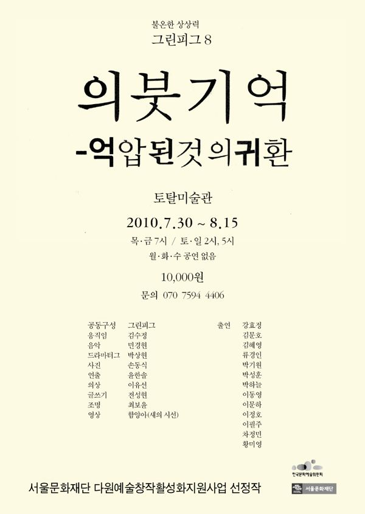

그린피그 공동구성, 윤한솔 연출

2010.7.30–8.15 / 토탈미술관
2010.8.17–18 / 창무 포스트극장 - 서울프린지페스티벌
2010.9.18–19 / 명동 삼일로창고극장 - 서울변방연극제
2012.10.12 / 토탈미술관 - 서울아트마켓 PAMS Choice 폐막작
2012.11.22–25 / 도쿄 니시스가모 - 페스티벌 도쿄
2017.11.7–10 / 독일 뮌헨 Einstein Kultur - SPIELART Festival
이전: 〈사람은 사람에게 늑대〉 | 다음: 〈누가 무하마드 알리의 관자놀이에 미사일 펀치를 꽂았는가?〉
아카이브로 돌아가기